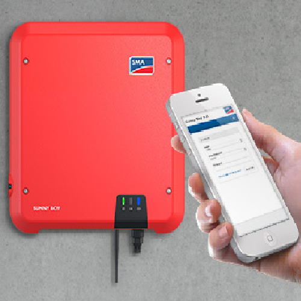

SMA Sunny Boy SB3.6 inverter
Thanks to its integrated web interface for easy commissioning via a smartphone or tablet and SMA Smart Connected service, this inverter offers true ease and comfort for PV system operators and installers. Established product features and integrated software solutions will provide yield optimization throughout the system’s entire service life. Even in shading. SMA ShadeFix is a proprietary inverter software that optimizes energy yield in nearly every situation. SMA Smart Connected inverter monitoring offers enhanced safety by detecting errors at an early stage and automatically reporting them to the installer. For more information please visit the supplier's product page.
